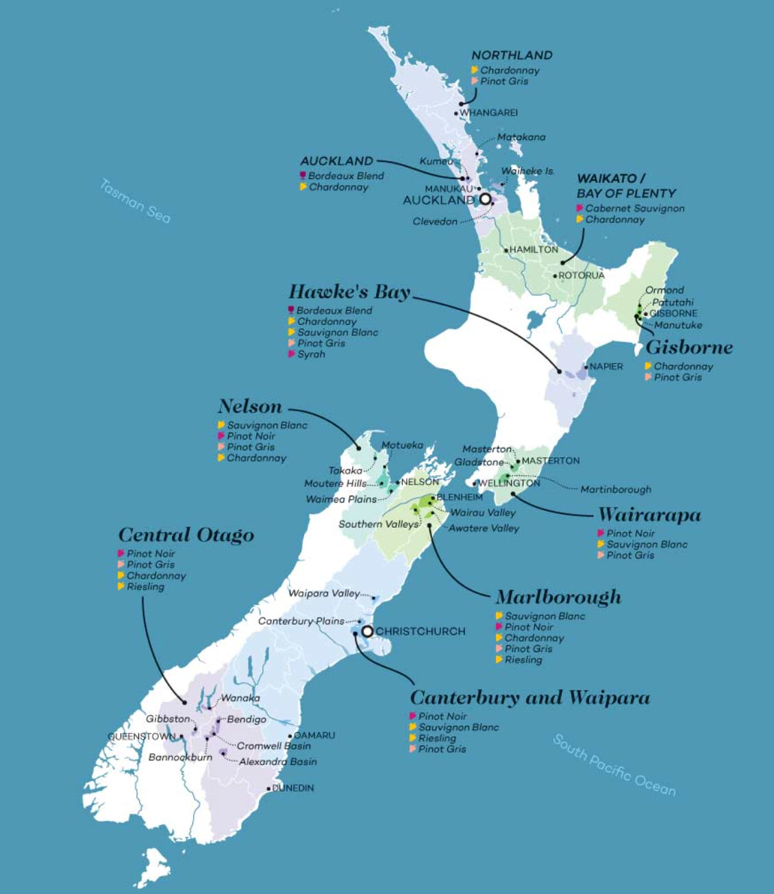

New Zealand
Top Picks
New Zealand's two categories to seek out wherever you find them. These are what the country does better than almost anywhere else in the world.
| Category | What to Look For | Why |
|---|---|---|
| White Wine | Sauvignon Blanc from Marlborough | Explosively aromatic — grapefruit, lime, and tropical fruit unlike any European Sauvignon Blanc. The benchmark style that put NZ on the world wine map. |
| Red Wine | Pinot Noir from Martinborough or Central Otago | Cool climate Pinot Noir with silky texture and Burgundian elegance. Central Otago sits at one of the southernmost wine regions on Earth — the cool air creates incredible complexity. |
New Zealand Wines to Look For
These bottles represent New Zealand's range — from world-famous Marlborough Sauvignon Blanc to elegant Central Otago Pinot Noir, refined Chardonnay, and stunning Bordeaux-style blends from Hawke's Bay.
| Wine | Varietal / Region | Notes | Taste | Est. Price |
|---|---|---|---|---|
| Cloudy Bay Sauvignon Blanc | Sauvignon Blanc / Marlborough | One of the wines that put New Zealand on the world wine map; highly aromatic and benchmark style | Zesty, Tropical, Crisp | ~$35 |
| Dog Point Sauvignon Blanc | Sauvignon Blanc / Marlborough | Boutique producer known for more restrained, mineral-driven Sauvignon Blanc | Grapefruit, Mineral, Bright | ~$30–40 |
| Craggy Range “Te Muna” Sauvignon Blanc | Sauvignon Blanc / Martinborough | More structured and mineral than typical Marlborough examples | Lime, Herbal, Crisp | ~$25–35 |
| Felton Road “Bannockburn” Pinot Noir | Pinot Noir / Central Otago | Organic winery producing elegant, world-class Pinot Noir from one of NZ's coolest regions | Cherry, Silky, Spice | ~$60–70 |
| Ata Rangi Pinot Noir | Pinot Noir / Martinborough | One of New Zealand's most respected Pinot Noir producers; Burgundian influence | Red Berry, Earthy, Elegant | ~$50–65 |
| Craggy Range “Sophia” | Bordeaux Blend / Hawke's Bay | Premium blend showing New Zealand's potential with structured Bordeaux varieties | Dark Fruit, Cedar, Bold | ~$70 |
| Te Mata “Coleraine” | Cabernet Blend / Hawke's Bay | Iconic New Zealand red often considered the country's greatest Bordeaux-style wine | Blackberry, Cedar, Structured | ~$80–120 |
| Neudorf “Tiritiri” Chardonnay | Chardonnay / Nelson | Boutique winery producing refined, mineral-driven Chardonnay | Peach, Mineral, Creamy | ~$30–40 |
| Quartz Reef Méthode Traditionnelle Brut | Sparkling / Central Otago | High-quality sparkling wine made in the traditional Champagne method | Citrus, Brioche, Elegant | ~$35–45 |
General Info
New Zealand is most famous for its Sauvignon Blanc from Marlborough, which is known for explosive flavors of grapefruit, lime, and tropical fruit — much more aromatic than most Sauvignon Blanc from Europe. Another standout is Pinot Noir from Central Otago, one of the southernmost wine regions in the world, where the cool climate produces elegant, silky reds.
What makes New Zealand unique is its combination of dramatic landscapes, ocean-influenced vineyards, and a strong focus on sustainable winemaking, making it one of the cleanest and most environmentally conscious wine industries globally.
Sauvignon Blanc Capital of the World
Nearly 71% of wine produced in New Zealand is Sauvignon Blanc. In the 1980s, a winemaker from Western Australia tried his luck with a remote vineyard project in New Zealand, ultimately winning major success with his Cloudy Bay Sauvignon Blanc, exciting wine enthusiasts around the globe. He turned a grape varietal that was not very popular into the prom queen.
Today, Marlborough Sauvignon Blanc is one of the most recognizable wine styles in the world — crisp, zesty, explosively aromatic, and almost always great value. If you enjoy white wine and haven't tried a Marlborough Sauv Blanc, it's one of the easiest wines to love from the first sip.
Region & Grape Overview
